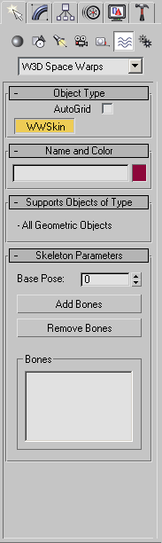

<!DOCTYPE HTML PUBLIC “-//W3C//DTD HTML 4.0 Transitional//EN”>
3DSMax W3D Skin Modifier
The 2nd part of the W3D plugin for max is the WWSkin. Although it is located under Space Warps in max, Its not a space warp in the traditional sense, but more-less put into the "Space Warps" section in max for because of the way this part of the plugin works. The WWSkin is used create a binding between the bones (used for animation in your scene) and the vertices of your geometry. Without this part you are unable to export any animations, transforms, or bones into W3D.
You Can find the "WWSkin" Plugin in the create panel of 3D Max
under:
> Space Warps > Westwood Space Warps >WWSkin
If you don't see it there, check your plugin installation.
The skinning modifier that (nowadays) ships with Max is superior for many tasks than our own. There are MaxScripts that convert back and forth between the modifiers. Just make sure when you export the file to have a WWSkin modifier.
To Create a WWSkin:
Select the button labeled "WWSkin" in the Object type rollout, now click and
drag in the viewport to create it. It may look very small at first, you can use
the scale tool to enlarge it. The WWSkin is represented as a set of crossbones.
To Bind A WWSkin to your geometry:
This Plugin works on a bones system. So you must have bones in your
scene. Although it can work with Biped, Dummy objects are used for most
purposes. Select the WWSkin Icon and go to the Modify panel in max. Click the
"Add Bones" button and select the bones that will be used to control the
geometry you wish to export then Click "OK". With the Icon Still Selected,
Click the "Bind to spacewarp" button, located on the main toolbar in max.
Starting from the Bone, Click and Drag until your over the geometry you wish to
bind to, then release. You've now bound the spacewarp to the geometry.
To Attach the vertices to a bone:
Your geometry will now be showing its vertices. Select the regular
Selection tool from the main toolbar in max and draw a selection set around the
vertices you wish to link to a particular bone. With the vertices
selected, click the "link to bone" button, then click on the dummy object or
(bone) you wish to link them to. To link more vertices to more bones, just do
the same process from the selecting the vertices part. The WWSkin works on a
single mesh and you can use multiple bones with it.
The bones wont influence
your geometry until you have moved from frame 0 and turned on the Animate
button in max.
To Animate:
With the frame on anything other than "0" and the animate button on, Select the
bones and animate them as you would normally
Heres a look at the WWSkin interface in max:
| Object Type: |  | |
| WWSkin | Click this and drag in your viewport to create the WWSkin space warp. | |
| AutoGrid | A Max implemented option:
lets you automatically create objects on the surface of other objects by
generating and activating a temporary construction plane based on normals of
the face that you click. This serves as a more efficient way of stacking
objects as you create them, rather than building objects and then aligning
them.
|
|
| Name and Color: | A Max implemented option: Name and color your WWSkin | |
| Supports Objects of Type: | All Geometric Objects | |
| Skeleton Parameters | ||
| Base Pose | Usually the default of 0 works fine for this, however, if in the instance your skeleton's base pose (T-pose) is not at frame "0" then adjust this spinner to the frame that your base pose is located on. | |
| Add Bones |
Select your bones with the selection tool and Click the "Add Bones" button to add the bones you intend to use with the WWSkin space warp. |
|
| Remove Bones | Select and remove previously added bones you do not wish to use with the WWSkin space warp. | |
| Bones | Displays the bones you have selected to be used with the space warp. | |
For a simple walkthrough of this exporting process, see the tutorial: (Exporting from Max).